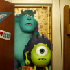

怪兽大学
《怪兽大学》（英语：Monsters University）是2001年动画《怪兽电力公司》的前传，故事回溯到主角毛怪与大眼仔的大学时光，讲述了他们从死对头变成至真好友的冒险经历。影片由皮克斯导演丹·斯坎隆（Dan Scanlon）执导，英文版由好莱坞喜剧演员比利·克里斯托（Billy Crystal）、约翰·古德曼（John Goodman）配音，中文版则邀来中国的徐峥与何炅献声。
《怪兽大学》（英语：Monsters University）是2001年动画《怪兽电力公司》的前传，故事回溯到主角毛怪与大眼仔的大学时光，讲述了他们从死对头变成至真好友的冒险经历。影片由皮克斯导演丹·斯坎隆（Dan Scanlon）执导，英文版由好莱坞喜剧演员比利·克里斯托（Billy Crystal）、约翰·古德曼（John Goodman）配音，中文版则邀来中国的徐峥与何炅献声。
主要演员
精彩图集 查看更多
麦克（大眼仔），在参观怪兽电力公司之后，下定决心要考进怪兽大学学习惊吓技能，将来成为一名惊吓专员。后来他如愿以偿考入了怪兽大学。开学不久的一天晚上，一个体积巨大的叫做苏利文的怪物闯进了麦克宿舍。当时，苏利文（毛怪）打算把怪兽大学的竞争对手恐怖科技学院的吉祥物藏在自己的房间，却误打误撞跑到了麦克的宿舍（当时他是爬窗进去的）。
这个吉祥物后来使得两人成为了冤家。两人在学院开设的恐吓课上，相互较量，看谁的恐吓本领更强。到了这门课程期末考试的时候，发生了一点意外，使得它们两都被惊吓学院的院长开除，去了别的学院，同时苏利文也被自己 的社团开除。麦克为了证明自己是有能力成为出色的惊吓专员，而当初院长开除他的决定是错误的，他加入了一个二流怪物组成的社团，与队友一起参加惊吓大赛。但这个二流怪物的社团实在是缺兵少将，他们还需要一个参赛者才能达到最低报名人数。为此，麦克不得已选择自己的死对头苏利文。在大赛的报名现场，他向院长保证，如果他输了，他就离开怪兽大学。同时院长也答应了他，如果他赢了，他和队友能重回惊吓学院。在比赛的过程中，苏利文和麦克渐渐地解开了心中的心结，成为了好朋友。
毛怪 配音 约翰·古德曼
说到惊吓，毛怪简直为此而生——巨无霸般的身材、排山倒海的咆哮，再加上声名显赫的惊吓世家背景，赢得怪兽大学历史悠久的惊吓联赛可谓志在必得。但是，自负的他就开始无心学业、玩世不恭，不过这位“吓二代”的小聪明很快就让他尝到了失败的苦头。
大眼仔 配音 比利·克里斯托
大眼仔一生的梦想就是成为怪兽电力公司的一名惊吓专员。在还只是个“小眼仔”的时候，他就一心向往能进入怪兽大学，世界顶级的惊吓学校深造。后来，他终于如愿以偿，成为了一名怪大新生。然而，学霸大眼仔被迫与一群格格不入的怪兽同学组团。
蓝道·宝基 配音 史蒂夫·布西密
细胳膊细腿的蓝道是怪兽大学的大一新生，他长得像一只外太空来的新品种蜥蜴。蓝道一心憧憬着大学生活，可是他一不好意思就会隐身的习惯却让他的计划都化为泡影，毕竟如果没人能看见他。
郝刻薄院长 配音 海伦·米伦
对于郝刻薄院长而言，世界上只分两种怪兽：会吓人的怪兽和一无是处的怪兽。她会这么想并不奇怪，毕竟她不仅是惊吓史上的传奇人物，也是怪兽大学惊吓学院的院长。要想成为一个优秀的怪兽，就必须使出浑身解数让她刮目相看。
老唐 配音 乔尔·默里
受经济不景气的影响，来自中西部的销售怪兽老唐打算重返校园进行进修，转行做惊吓怪兽。作为大学里的“大”学生以及“OK会”的创始人之一，老唐带领社团成员一起一心一意朝着目标全力奋进。
史乖宝 配音 彼得·索恩
史乖宝是一个不被主流接受的小怪兽——它瞪着五只天真无邪的大眼睛，不仅讷于言还讷于行，两条小短腿让他看起来憨态可掬。而且，史乖宝还和他无微不至的妈咪住在一起，他的整个大一都生活在嘲讽当中。
阿拱 配音 查理·戴
信奉自由主义的阿拱是一个神秘而来历不明的怪兽，作为OK会里最奇怪的一位成员，他凭借迅速的移动和神出鬼没的特技惊艳赛场，当然也时不时会掉链子。没什么会比一个可怕的毛球出其不意地出现在你面前更可怕的了。
①本片是导演丹·斯坎隆的个人长片导演处女作，他曾担任《赛车总动员》的编剧。
②本片是皮克斯公司拍摄的第一部“前传”作品。
③影片的导演，在原计划中是Doug Sweetland，他曾经给皮克斯拍摄了短片《魔术师与兔子》。可是后来却换成了丹·斯坎隆。
④影片中原计划是要出现麦克的父母的，可是在最终的版本中，他的父母没有出现。导演此举的目的是让麦克看起来更加可怜。
⑤本片是在2008年的迪士尼拍摄的《大学之旅》之后，第一部得到G分级的“高校题材”电影。
⑥A113是皮克斯的每部电影中都会出现的一个数字，在本片中，它是Professor Knight举办演讲的教室号。
⑦按照皮克斯的传统，每一部长片上映，都会搭配一部短片。这次搭配《怪兽大学》的短片是讲述蓝雨伞和红雨伞相爱故事的《蓝雨伞之恋》（The Blue Umbrella）。